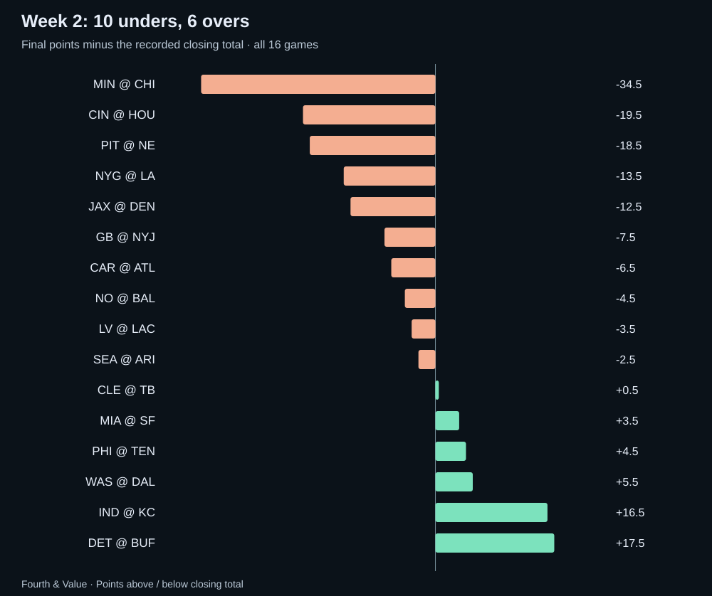
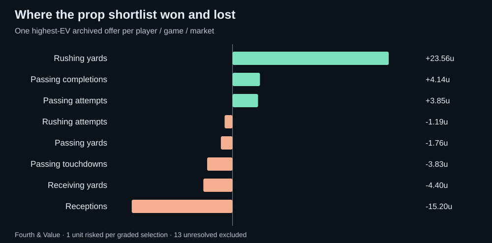
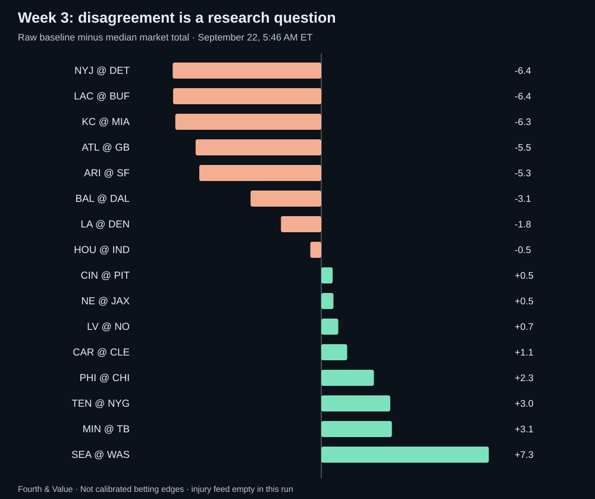

The under week—and the Week 3 traps it created
Ten games stayed under. Our prop shortlist scraped out a profit. Our raw totals model still went 5–11. The useful Week 3 lesson starts with understanding why those facts can coexist.
Recorded closing totals
434 graded selections
No spread pushes
Watch the market review
The scoreboard favored unders. It did not reward every under thesis.
Week 2 produced 647 points across 16 games: 40.4 per game, against an average recorded closing total of 45.1. Unders finished 10–6 with no pushes. Risking one unit on every under at the closing prices in our results source would have returned +3.10 units. That is a description of this slate, not an executable system we selected before it.
The reversal from the opening week was substantial. Week 1 had nine overs and seven unders. Combine the two weeks and unders lead only 17–15. Two slates do not establish a new scoring environment, and last week's winning direction does not tell us whether this week's price is good.
Minnesota–Chicago was the extreme: a 9–3 final against 46.5, finishing 34.5 points below the line. Pittsburgh–New England finished at 23 against 41.5; Cincinnati–Houston at 26 against 45.5. Those were major misses by the market. But Detroit–Buffalo reached 72 against 54.5, and Indianapolis–Kansas City reached 63 against 46.5. This was a low-scoring week with expensive exceptions for anyone who treated every game alike.

Favorites won 11 of 16 outright but split 8–8 against the spread. The corresponding flat-stake favorite moneyline basket lost 0.22 units; the underdog basket gained 0.89. A high win rate was not the same thing as a good return. Cleveland beating Tampa Bay 23–19 and Las Vegas beating the Chargers 26–14 mattered disproportionately to the underdog results because of the prices.
Our earlier saved totals snapshot also graded 10 unders and six overs, with +3.35 units for a blanket under basket at its saved best same-line prices. The difference from the closing-price return is precisely why we label the snapshot. A pick is a side, a number, a price and a time—not merely an opinion about scoring.
The strongest prop trend was rushing unders, not “all unders”
We reconstructed the actual pregame prop boards, then selected one representative offered line per player, game and market. The rule uses the line carried by the most distinct books, with results-blind tie-breaks. This prevents ten books quoting one player from becoming ten independent pieces of evidence.
| Market | Over | Under | Under rate |
|---|---|---|---|
| Passing attempts | 10 | 22 | 68.8% |
| Passing completions | 18 | 14 | 43.8% |
| Passing yards | 16 | 16 | 50.0% |
| Passing touchdowns | 14 | 18 | 56.3% |
| Interceptions | 14 | 18 | 56.3% |
| Receptions | 83 | 84 | 50.3% |
| Receiving yards | 79 | 89 | 53.0% |
| Rushing attempts | 22 | 36 | 62.1% |
| Rushing yards | 33 | 57 | 63.3% |
Rushing yards and rushing attempts stand out because their under rates were elevated across more than a handful of players. Passing attempts also leaned strongly under. Receptions were almost perfectly balanced, while completion overs won more often than completion unders. “Scoring was down” does not mean every kind of player production was down against its own line.
Price still changes the interpretation. Betting every representative rushing-yard under at the best archived price at that exact line returned +18.48 units. The corresponding passing-attempt under basket returned +10.00. Reception unders lost 5.97 units despite winning slightly more than half their decisions. These are retrospective market summaries, not new strategies discovered with an independent test.
Our scorecard: a small profit with a large weakness
For the model shortlist, we use a different rule: take its highest published expected-value offer per player, game and market, breaking ties consistently. That leaves 447 selections, of which 434 can be graded conservatively. They went 189–245 for +5.17 units, or +1.2% on units risked. Thirteen remain unresolved because we could not establish a matching result or sufficient offensive participation. Missing data does not become a winning under.
That low 43.5% hit rate can coexist with a profit because many selections paid plus money. It also matters that this is an illustrative, deduplicated portfolio, not an account statement or a claim that we placed 447 bets. If someone had instead bet every displayed book offer, the 1,816 graded offers lost 118.97 units, or 6.6%. Repeated quotes create concentrated exposure; the positive result depends on the stated selection rule.
| Market | W–L | Net units | Unresolved |
|---|---|---|---|
| Rushing yards | 37–35 | +23.56 | 1 |
| Passing completions | 12–8 | +4.14 | 0 |
| Passing attempts | 13–8 | +3.85 | 0 |
| Rushing attempts | 17–19 | −1.19 | 0 |
| Passing yards | 10–19 | −1.76 | 0 |
| Passing touchdowns | 11–19 | −3.83 | 0 |
| Receiving yards | 31–54 | −4.40 | 3 |
| Receptions | 58–83 | −15.20 | 9 |

The winners deserve context. Javonte Williams under 57.5 rushing yards at +245 won with 30; Saquon Barkley under 60.5 at +240 won with nine; Jahmyr Gibbs under 67.5 at +230 won with 52. Each had a published 50% model probability. Those were favorable outcomes at attractive payouts, but a flat calibrated probability across different lines is not evidence of precise player forecasting.
Receptions remained the clearest weakness. The model's mean missed actual catches by 1.85 on average on the matched probability sample, compared with 1.58 for the representative market line. Passing attempts offered a more encouraging comparison: model error of 6.39 attempts versus 6.72 for the line, and a better probability score. These are observations worth carrying into the next audit, not enough evidence to turn one category on and another off permanently.
Across 609 matched, non-push prop outcomes with both probabilities available, the model's Brier score was 0.2505 versus 0.2491 for the de-vigged consensus; lower is better. A game-block bootstrap interval for the difference spans zero, from −0.0040 to +0.0069. We do not have evidence from this week that the model's probabilities beat the market overall.
The totals model deserves an equally direct assessment. Choosing its raw projected direction against our saved totals produced five wins and eleven losses. Its average absolute error was 12.86 points, compared with 11.00 for the saved consensus and 10.69 for the recorded close. The calibrated projection came in at 11.06. Calibration restrained the model; it did not create a demonstrated totals advantage.
The picks we actually featured: Jones won, Skattebo lost
Our Daniel Jones under 31.5 attempts at DraftKings −110 won with 31 attempts, returning 0.91 units on one risked. That was a narrow win in a game that produced 63 points. Passing volume and the game total do not have to travel together.
Our Monday night video featured Cam Skattebo under 1.5 receptions at +118. He caught all four targets for 19 yards, so the bet lost one unit. Jaxson Dart left on the opening drive, and Jameis Winston took over as New York lost 28–6. The Giants' recap confirms the quarterback change.
The original preview explicitly identified a trailing game script and checkdowns as threats to the under. The result is consistent with that concern, although the box score alone cannot assign each catch to a particular cause. We should not use an injury to erase a losing pick. We should ask whether our pregame probability gave enough weight to the ways a rushing-first back can still catch two passes. The two featured props together finished 1–1 for −0.09 units.
Eagles–Titans: the over won. Did the injury thesis win?
Our pregame case study compared a captured total of 42.5 with a later 39.5 consensus. The raw model projected 44.2; the provisional injury layer moved it to 43.6. Philadelphia won 24–20, producing 44 points. Over 39.5 won, and 43.6 was closer to the final than 39.5.
That is a favorable case for investigating a downward overreaction. It is not proof that injuries caused the entire move, that our injury weights were correct, or that the fair pregame total was exactly 43.6. The recorded closing line remained 39.5: the market did not move back toward our higher number before kickoff.
Some books were already at 39.5 when first captured. A first-observed price is not necessarily a sportsbook's true opener. We cannot say those books “overreacted by three points” without their own earlier quote. Our screen's three-point change is a comparison between captured market snapshots, not a verified announcement-to-price experiment at every book.
There is also a modeling reason to be cautious: much of that report concerned defensive players, including Jonathan Greenard. A defensive absence can help the opposing offense. A generic downward injury adjustment can therefore have the wrong sign. The next version of this research needs the player's role, replacement quality and team-level effect—not just a longer injury list.
Week 3: start with the quarterback, then the number
What this preview uses. The September 22 refresh includes completed games through September 21, so Week 2 results are in the Week 3 inputs. However, its automated Week 3 injury file contains zero rows. That means missing coverage, not a healthy league. The totals below are raw baselines, and the injury analysis here comes from the dated team and league reports linked below.
Our largest numerical gaps are research priorities. Seattle–Washington is roughly 47.3 in the raw model against a 40.0 median market total. Chargers–Bills is 44.1 against 50.5. Jets–Lions is 41.6 against 48.0. After a 5–11 week for raw totals directions, promoting those gaps straight into “best bets” would overstate what we know.

1. Falcons at Packers: a tempting Kraft price with a real reason to wait
Thursday's game has Green Bay favored by 6.5 and a median total of 44.5 in the saved snapshot. Atlanta has named Michael Penix Jr. its starter. That personnel change matters more than simply extending Atlanta's poor opening results into another week.
The prop worth investigating is Tucker Kraft under 3.5 receptions. Our model mean is 2.28 and its calibrated under probability is 57.9%, against a same-line consensus of 42.4% from four books with paired prices. Those are materially different views of his role.
| Book | Price | Break-even |
|---|---|---|
| BetOnline.ag | +125 | 44.4% |
| DraftKings | +123 | 44.8% |
| Bovada | +120 | 45.5% |
| FanDuel | +116 | 46.3% |
DraftKings is the strongest price among the U.S. regulated books in this captured comparison; BetOnline is the highest listed payout overall. Kraft has three and two receptions in his first two games, on six and three targets in our results data. His official player page confirms the catch totals. That supports investigating a modest reception expectation, but two games do not define his ceiling or his new role.
The counterargument is especially important: Jayden Reed was estimated as a nonparticipant with a neck injury on Monday. If Reed misses the game, targets may redistribute toward Kraft. Green Bay also listed offensive linemen as nonparticipants, potentially changing protection and route assignments. These were estimated participation reports, not final game designations. See the official Packers–Falcons report.
Editorial stance: conditional lean, not a released bet. Revisit under 3.5 at +120 or better only after checking Reed's availability and Kraft's expected role. If Reed is out or Kraft's route share is expanding, pass until the projection is updated. Do not substitute under 2.5. A recent 15.20-unit loss in reception selections is another reason to test this disagreement rather than trust its displayed edge.
Technically, the model combines player history and recent usage with matchup adjustments, then turns its mean and spread into a probability using a Normal distribution for receptions and applies a fitted calibration curve. It is not using a Poisson model for this market. The calibration has flat regions: different raw estimates can map to the same probability. The 57.9% should therefore be treated as a fitted estimate to challenge, not a precise measurement of Thursday's true chance.
2. Seahawks at Commanders: the biggest gap is also the clearest missing-input warning
Washington will start Marcus Mariota after Jayden Daniels' elbow injury. Seattle hopes Sam Darnold can return to practice, which is not confirmation that he will start. A model informed by prior team performance can be numerically current and still misrepresent the coming quarterback matchup.
Pass on the apparent over edge for now. The correct next step is to compare a Mariota-versus-Darnold scenario with Mariota-versus-Lock, including passing efficiency, rushing contribution and pace. We do not have a validated point adjustment for those combinations in this run. Calling the roughly seven-point gap a market overreaction would skip the most important piece of work.
3. Vikings at Buccaneers: look for a reset in the offensive assumptions
Minnesota scored nine points last week, but Kyler Murray has cleared concussion protocol and is set to start. That changes the Week 3 question. The market median is 43.0; our raw baseline is 46.1.
This is an over research candidate, not a blind rebound bet. DraftKings offered over 42.5 at −118, while LowVig offered over 43 at −105. The lower number costs more: at 43 points, 42.5 wins and 43 pushes; at 42 or fewer both lose. Without a calibrated scoring distribution, we cannot declare which trade is better simply by looking at the juice. Monitor Murray's full practice participation and the receiving personnel before considering either.
4. Chargers at Bills: an under candidate without pretending Buffalo forgot how to score
Buffalo just scored 41, while the Chargers scored 14. Their Week 3 market median is 50.5 against our raw 44.1. The interesting question is whether the market's expected combined output demands more from Los Angeles than its offense can supply, not whether Buffalo's last result was “too high.”
Keep this on the under research list. The snapshot had under 50.5 at −113 at LowVig and −114 at BetRivers; BetMGM offered under 50 at −108. At exactly 50, the half-point makes the first two winners while the latter pushes. The better payout on under 50 is not automatically the better bet. We are not issuing a probability or stake based solely on the raw model gap.
5. Three injury situations that deserve patience
Eagles at Bears: Caleb Williams is week-to-week with a hamstring injury; Chicago had not ruled him out for Monday. The market median of 44.25 is between actual offered totals. Our 46.5 baseline is not a Williams-versus-Bagent valuation. Wait for the starter and compare Chicago's team total with the full-game total so an offensive downgrade is not counted twice.
Titans at Giants: Dart's departure makes New York's offensive projection uncertain. Our raw 43.5 versus a market 40.5 is insufficient reason to buy the over. A quarterback change can alter the distribution of targets as well as overall efficiency; repeating Skattebo's under without a role review would ignore what Monday taught us.
Texans at Colts: Alec Pierce is expected to miss several weeks with a heel injury. Watch how Indianapolis reallocates routes before chasing receiving overs. More targets for one player do not guarantee more efficient offense, and a receiver's absence does not automatically reduce the quarterback's attempt count. The game total is around 43.5; our baseline is 43.0, providing little raw separation.
Elsewhere, Ravens–Cowboys carries a 52.5 median total against a 49.4 baseline, while Rams–Broncos sits at 45.5 against 43.7. Both warrant ordinary matchup work, not an automatic fade of last week's winners. For Los Angeles, Puka Nacua's Monday absence with a hip injury makes his subsequent availability a key variable before projecting receiver usage in Denver.
What we carry forward
The best habit from Week 2 is separating the questions. Did the direction win? Did the available price pay enough? Did the forecast outperform a market baseline? Did an injury alter the role we were betting on? The answers were often different.
For Week 3, Kraft's reception line is our most concrete conditional prop discussion; Minnesota–Tampa Bay and Chargers–Buffalo are totals research priorities. Seattle–Washington, Tennessee–New York and Philadelphia–Chicago need quarterback-specific work before the raw gaps deserve a betting interpretation. Waiting for information is a decision, particularly when the number on the screen suggests more certainty than the inputs support.
Follow the props board, totals board and Fourth & Value on YouTube for the next discussion. The aim is to make the next price decision better—and keep a record honest enough to tell whether it was.
Audit notes and downloadable evidence
Results cover all 16 games on September 17–21, 2026. Player results come from the nflverse weekly player release; game results and recorded closing lines come from the nflverse schedule. The frozen source files and hashes are preserved with this audit.
Pregame prop evidence uses repository snapshot 13c730d for Detroit–Buffalo and 5a4f3bf for the other 15 games: September 17 at about 5:29 PM ET and September 20 at about 9:54 AM ET, respectively. Every selected snapshot precedes kickoff, and no forecast was refitted for this recap. The totals model comparison uses its separate September 17 snapshot. “Closing” and “our snapshot” are intentionally different benchmarks.
Representative-line ties use proximity to the median of distinct book/line pairs, then the lower line. Best-price comparisons use actual offers at that exact side and line. Portfolio selections use highest archived EV per player/game/market. These are different, explicitly defined comparisons. All returns assume one unit risked, American-odds payouts, refunds for pushes, and no compounding. Book-specific injury protection or void rules can change real settlement.
We require matching player/game results and evidence of offensive usage. Unsupported markets and unresolved participation are excluded rather than assigned zero. Within-game props are correlated. The 95% Brier-difference interval resamples games, not individual offers, over 5,000 replicates. Subgroup results are descriptive and have not been independently validated.
Download Week 2 audit JSON · Download frozen Week 3 quotes and baselines · Reproduce the audit · Previous Week 1 review